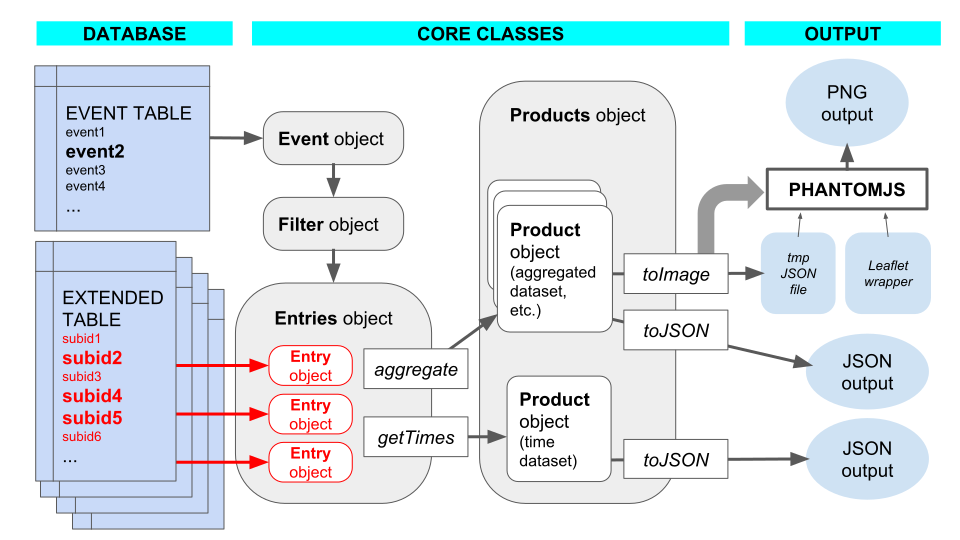

Technical Guide¶
Process flowchart¶
The following diagram shows the flowchart for the creation of DYFI products. Object classes and methods are explained in the Module List.
Note
In the above diagrams, items shown in red contain or transfer personally identifiable information (PII). Care must be taken to make sure that data in these sections are properly handled.
Input streams¶
Earthquake events¶
TODO
The event data is described below.
| Column | Description |
| eventid | USGS event ID, usually 10 characters; primary key |
| mag | Magnitude |
| lat | Epicentral latitude |
| lon | Epicentral longitude |
| depth | Hypocentral depth |
| region | obsolete |
| source | 2 letter network code |
| mainshock | obsolete |
| loc | Text description of the location (e.g. “9km ENE of San Simeon, CA”) |
| nresponses | Number of DYFI responses attached to this event |
| eventdatetime | Earthquake event time in YYYY-MM-DD HH:MM:SS format |
| createdtime | Time that this row was last created or updated |
| newresponses | Number of DYFI responses for this event since the last time this was run |
| run_flag | obsolete |
| citydb | obsolete |
| zipdb | obsolete |
| ciim_version | Incremented whenever rundyfi.py runs |
| code_version | Current version of DYFI when this event was last run |
| process_timestamp | Time when rundyfi.py was last run |
| max_intensity | Maximum computed intensity |
| sent_email | obsolete |
| event_version | Event information version (from ComCat) |
| orig_id | Original USGS event ID |
| eventlocaltime | Event local time (from ComCat) |
| invisible | see below |
| good_id | obsolete |
All columns are Sqlite text fields.
The column newresponses is updated by the backend whenever a new user response is processed, and is reset to zero whenever the rundyfi.py runs. This is how the backend knows when rundyfi.py should be triggered.
The column orig_id is initially the same as eventid. This allows the first event ID to be archived in case the event ID is manually changed.
The column invisible is set to true when an event is no longer valid, and DYFI products are no longer applicable. Examples are bogus, duplicate, or non-authoritative events. These events will not be exported, and responses will not be automatically associated to them. (They may still be run manually.)
Note
Obsolete columns are for compatibility with DYFI3 only. They will be removed in a future release.
User responses¶
TODO
The extended table data is described below.
| Column | Description |
| subid | Integer type unique primary key for each row |
| eventid | Event ID that this response is associated to |
| orig_id | Original event ID when response was processed |
| suspect | Flag for responses that are bogus or outliers |
| region | obsolete |
| usertime | DYFI Felt Report, see below |
| time_now | Time this reply was submitted in YYYY-MM-DD HH:MM:SS format |
| latitude | User latitude |
| longitude | User longitude |
| geo_source | obsolete |
| zip | obsolete |
| zip_4 | obsolete |
| city | obsolete |
| admin_region | obsolete |
| country | obsolete |
| street | DYFI Felt Report, see below |
| name | DYFI Felt Report |
| DYFI Felt Report | |
| phone | DYFI Felt Report |
| situation | DYFI Felt Report |
| building | DYFI Felt Report |
| asleep | DYFI Felt Report |
| felt | DYFI Felt Report |
| other_felt | DYFI Felt Report |
| motion | DYFI Felt Report |
| duration | DYFI Felt Report |
| reaction | DYFI Felt Report |
| response | DYFI Felt Report |
| stand | DYFI Felt Report |
| sway | DYFI Felt Report |
| creak | DYFI Felt Report |
| shelf | DYFI Felt Report |
| picture | DYFI Felt Report |
| furniture | DYFI Felt Report |
| heavy_appliance | DYFI Felt Report |
| walls | DYFI Felt Report |
| slide_1_foot | DYFI Felt Report |
| d_text | DYFI Felt Report |
| damage | obsolete |
| building_details | DYFI Felt Report |
| comments | DYFI Felt Report |
| user_cdi | Computed from DYFI Felt Report |
| city_latitude | obsolete |
| city_longitude | obsolete |
| city_population | obsolete |
| zip_latitude | obsolete |
| zip_longitude | obsolete |
| location | obsolete |
| tzoffset | obsolete |
| confidence | Estimate of geocoding confidence, see below |
| version | obsolete |
| citydb | obsolete |
| cityid | obsolete |
All columns are Sqlite text fields unless indicated otherwise.
The column orig_id is initially the same as eventid. For responses that were not originally attached to an event (“unassociated entries”), both fields would have the value “unknown”. This allows the original data to be archived in case the this entry is associated or manually updated.
The column suspect is set automatically by the Entry module when the entry is suspected to be bogus or an outlier. The operator may also manually flag entries this way.
The column time_now is set by the DYFI Felt Report submit function. This is the time used for associating entries.
The column usertime is filled in by the user. It is not automatically parsed; it is for the operator’s information only.
The columns latitude and longitude are automatically filled in by the geocoding function of they DYFI Felt Report.
The column confidence is an estimate from the geocoding function of the precision of the latitude and longitude output. See Geocoding for details.
The column user_cdi is the value computed by the form the user’s intensity (only), with no aggregation. It is a quick way to look for outlier entries, but it is not used in DYFI computation.
Note
Obsolete columns are for compatibility with DYFI3 only. They will be removed in a future release.
DYFI products¶
The DYFI ‘signature product’ is no longer a static image but a GeoJSON file. This file contains the aggregated data as GeoJSON Features with coordinates for plotting and corresponding intensities (see the Product Guide).
The USGS Web Pages use the Leaflet rendering engine to display the maps, along with a suitable basemap. Users may use other rendering engines, such as OpenLayers, or a GIS application.
For the creation of static images, see the Implementation Guide.